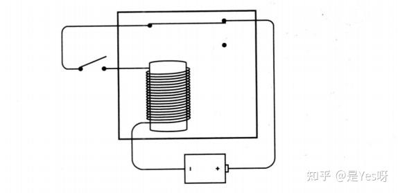
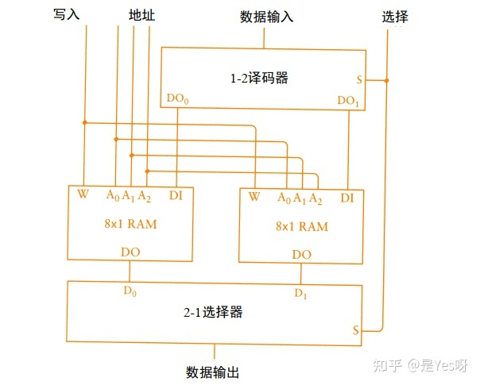

计算机的原理是什么？
作者：是Yes呀 - 知乎
这篇主要是我看了《 编码 ：隐匿在计算机软硬件背后的语言》这本书之后，按照个人理解梳理了一遍，算是把重点都提炼出来了。（按：读者如果感兴趣，可以去看原书，写得很好，初中毕业文化即可看懂。本文限于篇幅，有些地方可能不太好懂。也可看CrashCourse 出品的视频《计算机科学速成课》。如有疑惑，可以咨询电脑社）
电磁现象
这个故事得从「电」开始说起。电是如何来的？
电起源于电子的运动，我们知道一切物质都是由原子组成的，而原子又是由中子、质子和电子构成。
在某种情况下电子从原子中电离出来，这样电就产生了。
质子和电子都具有带电荷的特性，质子带正电荷、电子带负电荷。
而异电相吸，同电相斥，当质子数和电子数相等的时候是最稳定的，如果数量不平衡也会往趋于平衡的方向发展。像雷雨天气，云层下层积累电子而云层顶层失去电子，而闪电就是大量的电子迅速从一端转移到另一端产生的结果，为了趋于平衡。
相信大家都做过电池点亮灯泡的物理实验。
这其实就是电池发生化学反应，在负极产生多余的电子，然后通过回路中的原子类似接力的形式，一个原子得到电子之后会传递给相邻的另一个原子，如此循环传递电路就形成了，最终通过灯泡到达电池的正极。
改装下再套上个外壳，手电筒就这样被造出来了。
而手电筒不仅仅可以用来照明，还能用来通信。相信大家都看过类似的电影场景，我这手电筒的光闪三下咱们就上！
而说到这样简易的通信就不得不提摩尔斯电码，相信大家也从各渠道对摩尔斯电码有一定的了解，比如「星际穿越」这部贼好看的电影。
在 19 世纪初期，那时候的远距离通信还得利用马车等工具长时间运输传递，人们一直在摸索即时远距离通信的方法。那时的摩尔斯就开始埋头实验，最终发明了电报。
电报的思想和上述说的手电筒思想一样，手电筒通信的思想是通过开关来控制灯的亮暗，而电报利用的是电磁现象。
将导线缠绕在铁棒上，然后通电之后铁棒就变成了磁铁，断电了磁性又会消失，然后再搞个发声器，通过磁性来吸引可动棒敲击发声。
通电后可动棒被拉下，敲击下方就会发出 “滴” 的声音，断电则可动棒复位，敲击上方发出 “嗒” 的声音。将快速的滴答作为点，慢速的滴答作为划。
通过导线的长距离连接就能实现远距离通信，通过判别点和划的组合查阅摩尔斯电码表，转成最终的信息。
如果要双向通信，就再搞一个反过来部署就好了，这就是电报机了。
不过导线是有电阻的，导线越长电阻越大，所以是有距离限制的，不过这难不倒我们，最简单的方法就是转发一下。
在中间距离也建个电报站，然后雇一个人，得到发送方的电报信息之后，重新敲一遍发送给真正的接收方，但是这需要多余的人力，所以可以如下图所示，搞个棒子连起来带动下一个开关的输出。
这其实就是继电器原理，我们来看看继电器是如何的设计的。
下方通电产生磁力，吸引上方的金属杆挂下，然后上方形成回路因此也通电了，这样远距离传输的微弱电流就被又一次放大输出了，所以最终的远距离电报应该是这样的。

可以看到继电器这个发明是真的巧妙。
理解了上面所述的电的生成、电报以及继电器之后我们再来看看二进制。
基于二进制的数字系统是最简单的，只有 0 和 1，不能再进一步简化了，而简单就代表着清晰，就像开关要么开要么关。
而二进制的组合又可以代表多种可能，比如第一个 0 表示男，1 表示女 ，第二个 0 表示胖，1 表示瘦，则 00 代表胖男人。
让我们再回到之前的电池电灯图中，这次搞两个开关。
可以得知两个开关都闭合电灯才会亮，如果转化成二进制表示，0 表示开关断开，1 表示开关闭合，0 表示灯泡不亮，1 表示灯泡亮，总结成一张表格的话就是：
| 左开关 | 右开关 | 灯泡 |
|---|---|---|
| 0 | 0 | 0 |
| 0 | 1 | 0 |
| 1 | 0 | 0 |
| 1 | 1 | 1 |
这其实就是我们熟知的 AND 操作，如果把电路稍微改一下就是 OR 操作了。
| 左开关 | 右开关 | 灯泡 |
|---|---|---|
| 0 | 0 | 0 |
| 0 | 1 | 1 |
| 1 | 0 | 1 |
| 1 | 1 | 1 |
如果把很多开关组合起来就能执行简单的逻辑任务，但是开关需要手动的去控制。
记得之前提到的继电器吗？它也能串联或者并联电路，而且可以被其他继电器联动控制，不需要一个一个拨动，因此用继电器来组合更加合适，而继电器的组合称之为逻辑门。
简单点的就像下图所示，开关闭合灯泡就会亮。
有些人觉得这不是多次一举吗，这其实是个缓冲器，可以延迟信号，也可以放大信号（按：玩过MC红石就知道了），而且这个电路比较简单，实际上有很多组合，比如下图的这个反向操作，开关闭合的灯反而不会亮。
还有像这样的串联组合，只有两个开关都闭合灯泡才会亮。
当然这里的输入不一定得是开关，输出也不一定得是灯泡，只是为了更加直观的表现出来，不过这样画电路太麻烦了，于是电气工程师们就搞了个符号来表示这些电路，比如上面的串联其实就是 AND 操作，是与门。
简化一下上面的图就变成下面的样子。
如果电路图如下所示，就是并联，随便一个开关开了灯泡都会亮，这就是或门。
简化符号是这样的：
前面还提到个反向操作的，开关闭上灯泡反而不亮的叫反向器，符号如下图所示。
我们再来看看这样的电路。
只有当两个开关都断开的情况下灯泡才会亮，任何一个开关闭合灯泡都会熄灭，这个操作和 OR 操作相反，称之为 NOR 即或非门，简化后的符号比或门多了个小圆圈，代表反向。
或者这样，组合着画也一样。
然后我们再来看看这种电路，只有两个开关都闭合才会熄灭，这和与门正好相反，称之为 NAND 与非门。
简化符号是这样的，也是多了个圆圈：
我再总结一下这几个简化图，加深一下印象。
二进制加法机
有了上面这几样东西，我们就可以造个二进制加法机，不要小看加法，因为可以用加法来实现减法、乘法、除法等操作。
注意，在二进制下加法是这样的（类比十进制满十进一，二进制下满二进一）：
现在我们考虑一位二进制数之间的加法，输入是两个量，每个量是一位的二进制数（分别记作X,Y），输出是一个量，而且必须有两位才能存储足够的信息（考虑到 1+1=10），这两位从右往左依次是“当前和”（记作S）、“进位”（记作CO）信息位，例如二进制中 1 + 1，当前和是 0 ，进位 1。
| X | Y | CO | S | X AND Y | X XOR Y |
|---|---|---|---|---|---|
| 0 | 0 | 0 | 0 | 0 | 0 |
| 0 | 1 | 0 | 1 | 0 | 1 |
| 1 | 0 | 0 | 1 | 0 | 1 |
| 1 | 1 | 1 | 0 | 1 | 0 |
有没有可能用逻辑门实现“加法”这一功能呢？我们发现只有 1 +1 进位 1 ，再仔细看看是不是和 AND 操作的结果一模一样？当且仅当 1 AND 1 结果才为1 。于是有：CO=X AND Y. 用与门即可获得“进位”的值！
我们再来看看当前和的计算，大家可以在脑子里面想象下，如果拿 OR 操作来套用的话右下角结果不对，如果是 NAND 操作的话左上角结果不对，所以得两个结合一下，电路图如下。
分别通过或门和与非门之后再做与门，出来的结果就是当前和的结果，这个其实就是 XOR 异或门，于是有：S=X XOR Y.
所以加法需要通过两个逻辑门，分别是异或门来获得当前和，与门来获得进位，结合起来如下图所示：
这其实就是个半加器，简化的图如下所示：
那为什么叫半加器？因为只能一位一位的加，而前一位的进位参与不到下一位的计算，如果要加入进位那下一位的运行就是 A 的当前位 + B 的当前位 + A 和 B 之前的进位。即处理三个加数。
因此需要改装一下，两个半加器合起来再加一个或门。
假设 A 输入 1 ， B 输入 1， 进位输入 1，从最左边开始第一个半加器 S 输出 0 ， CO 输出 1，第二个半加器 S输出 1，CO 输出 0，最终和输出 1，进位输出 1，结果没毛病可行，这叫全加器，简化一下图：
全加器有了，咱们把单个全加器串联起来，就得到了加法计算器。下图是计算 与 之和 的加法器。有 5 个输出位是因为两个 4 位相加结果可能是 5 位。
简化的画法如下图所示：

现在我们已经造出了八位加法器了，如果要 16 位呢？简单合一下就好了。
当然真实的计算机原理差不多是这样的，不过会更复杂，比如不会像我们的加法器，一个一个的进位加，而是会先行进位，而且也不会用继电器，而是晶体管等等。
减法怎么弄？
加法器我们搞出来了，那减法怎么做？减法需要有借位操作。
我们先拿熟悉的十进制来说。假设你的账户上限是499，你的透支额度是500，也就是说你的账户金额范围是 -500~499 这 1000 个数字，要求不能用负号来表示。
可以看到这是个三位数，而最大值就到 499 过，说明 500~999 之间的数没用，那拿来表示负数不就刚刚好吗？所以让 500 表示 - 500 ，501 表示 -499，以此类推。500,501.......998,999,000,001......498,499，让5、6、7、8、9开头的数都代表负数，而且是不是看起来还形成了个环形（想象时钟）， 499 + 1 就变成 500 了，然后 999 + 1 变成 1000 ，但是只能三位数表示，所以溢出了变成 000。
这种处理叫 10 的补数，如果要把三位负数转为 10 的补数，就是让 999 减去它再加一，也就是说 10 的补数等于 9 的补数加一。
补数的概念：拿 9 的补数来说，将一个数从一串 9 中减去得到的结果就叫这个数 9 的补数，比如 123 ，它是三位数 ，999-123 = 876 所以 123 的 9 的补数就是 876，如果把结果 + 1那就是 10 的补数了。
就拿 -499 来说，我们要转化成补数，就是 999 - 499 + 1 等于 501 ，看上面的排列确实用 501 来代表 - 499。
那减去一个数不就是加上一个数的负数吗？所以通过补数我们就不需要做减法，只需要转成补数再相加就行了！
现在我们再换成二进制，二进制相比于十进制就更简单了。
拿八位二进制数来说，范围是 00000000~11111111， 对应的十进制是 0~255，但现在我们想让它能表示负数，前面十进制的时候我们将 5、6、7、8、9开头的正数来表示负数，对应于二进制我们可以将第一位以1开头的作为负数。
那此时的范围就是：
如果你理解了上面的十进制转化，这个二进制肯定是没问题的，这其实就是算出 2 的补数，而 2 的补数又是 1 的补数 +1。
我们拿 125 来举个例子，125 二进制表示是 01111101，求 1 的补数就是 11111111 - 01111101，这个减法在二进制中不需要，因为这其实就是求反，还记得上文提到的反向器吗？
取反了之后再加一，就得到 2 的补码。
所以 -125 就是 10000011。
当然这一切的前提都是数字的位数需要固定，所以计算机中的位数就是固定的，超出了就会溢出，到这里你应该可以理解计算机中的补码是怎么来的，而且理解了为什么最大值 +1会变成最小值？
所以减法我们只需要改造一下上面的加法器，给个开关表示要这个数是负数，如果是负数则进行一波反向器操作然后再 +1，之后再进行加法操作即可得到最终的结果。
乘法和除法我就不分析了，一样也能通过加减法来实现。
振荡器(时钟)、锁存器（触发器）和计数器
当然这个和我们所认识的计算机还差很多，现在只能进行一些非常简陋的加减操作，别急我们先来看看这个电路。

这个电路很有意思，当你闭合开关的时候电路通了，此时由于电磁效应可动棒被吸了下来，电路就断了，断了之后磁性消失了可动棒又移了上去，这样电路又通了，如此往复。
这种电路叫振荡器，这是一个很关键的东西，记住它。
它的来回振荡其实就是在输出 0 和 1 的交替序列，画成图如下所示：
随着时间的变化在 0 和 1之间交替变化，因此也称之为时钟。
一个变化循环所需要的时间称之为周期，频率是周期的倒数，如果周期是 0.05 秒，那么频率就是 20，每秒 20 个循环，用赫兹来作其单位，所以就是 20 Hz。
我们再来看下这个电路。
此时灯泡是不亮的。当上面的开关闭合后，左边的或非门输出 0 ，右边的或非门输出是 1，因此灯泡亮了。 神奇的地方来了，此时你断开上面的开关，灯泡依然是亮的，因为左边的或非门输出还是 0，而或非门只要有一个输入是 1，输出就是 0 。
此时如果闭合下面的开关，灯泡就会熄灭，再断开下面的开关灯泡仍旧不亮。
可以看到这个电路是有记忆功能的，你看如果你发现此时的灯泡是亮的，你就能推断上一次闭合的是上面的开关，如果此时灯泡是暗的那么上次闭合的就是下面的开关！
这种电路叫触发器，其实上面的开关就等于置位(set)，下面的开关等于复位（Reset），所以这也叫 R-S触发器。
不过更有用的电路应该能记住某个特定时间点的上上一个信号是 0 是 1。
所以还需要搞个保持位，使得保持位关了之后，上下两个开关随意拨动都不影响之前保持结果（下面的图复位和置位位置和我们电路图是相反了，不过没影响一样的）。
其实就是当保持位 0 的时候，复位和置位通过与门的输出肯定是 0 根本影响不到之前的结果。
但是这样就有三位输入了，比较麻烦。从上面的观察来看有意义的输入其实是上面开下面关，或者上面关下面开，所以一定是相反的。所以搞个反向器这样就只有两个输入了。
这个叫电平触发的D型触发器，D表示 Data，数据的输入。电平触发就是当保持位为某一个特定电平时 （例子是 1），触发器就会保存数据端的输入值。
理解了保持位之后，我们需要引入时钟（标志为 clk），一个有规律的来回变化的时钟，当时钟从 1 切换到 0 的时候上一次操作的内容就被保存了，所以把保持位的输入替换成时钟输入。
这样的电路叫做电平触发的D型锁存器，它表示电路锁存住一位数据，并保持到将来使用，它也称之为 1 位存储器。
有了 1 位存储器，那多位存储器就很简单了，就是将多个锁存器合在一起，如下图是八位锁存器。
这里还需要提一下边沿触发器，不同于电平触发器的是边沿触发器是在 0 变成 1 的瞬间记录结果，像电平触发器是在 1 的时候每个结果都会被覆盖性的记住，在某些场景下边沿触发器的瞬时性更合适。
电路图如下，由两级 R-S 触发器链接而成，其实这种电路看不的很乱觉得很复杂没事，知道结果就行了。
简化的画法如下：
然后我们再来看下这个电路：
将振荡器的输出作为时钟的输入，然后反向 Q 端(上图中下面的Q代表反向Q，图少了一横)的输入又作为 D 的输入。
出来的波形图是这样的，可以看到 Q 的输出频率是时钟的一半，所以这种电路称为分频器。
而分频器的输出又可以是下一个分频器的输入，我们再来看下这个图：
出来的波形图是这样的：
再填上 0 和 1：
从 Q3 开始每一列从下往上看，是不是 0000、0001、0010.... 这就是计数器，把 8 个集成一下放在黑盒中，就构成了 8 位的计数器。
当然这个计数器是异步的，后面的得等前面的通知，比较不准确，所以更好的是同步计数器，不过比较复杂，这里就不介绍了。
简单组装一下
至此我们已经有了加法器、振荡器(时钟)、锁存器（触发器）和计数器，接下来我们就开始组装一下它们。
比如现在我们有一个灯泡，想测试一下八个锁存器，八个锁存器的话那么需要 3 个开关来表示具体选择哪个锁存器，2 的 3 次方等于8。
中间的黑盒肯定是拿来选择的，通过开关来控制通路，比较复杂我觉得稍微看看就行，反正就是电路选择。
输入的话也不用直接用八个，所以也搞个三个开关。
内部构造我就不贴了，也和选择器一样复杂，这叫译码器，最终完整电路图如下：
而是S0、S1、S2 其实就是地址，通过地址来选择写入哪个锁存器中，并且对应输出结果，这种配置叫读/写存储器，也称为随机访问存储器即 RAM。
因为它能保存信息，所以叫存储器，因为能根据地址选择来写入读取所以是随机。
上图电路简化图如下，能存储 8 个独立的 1 位数据。
两个 8*1 RAM 结合一下就能表示存储 8 个独立的 2 位数据。
如果是通过下面这样的组合，则能表示 16*1 RAM，那个 DI 其实就是第四根地址线，所以是 2 的 4 次方。

可以看到 RAM 阵列的存储容量等于 2 的地址数次方，然后注意下我们图是简化了的，里面其实有很多继电器的，像逻辑门都是由继电器构成的，当断电之后电磁效应就没了，所有的触点都回归原样，这就是 RAM 为什么是易失性存储介质的原因。
咱们现在已经把内存给搞出来了。
接下来我们的目标就是把要计算的数据输入内存中，然后让加法器计算了之后把结果写回内存，并且可以再通过内存查看结果，大致的组装样子如下：

然后我们可以将加法器和锁存器结合起来作为一个累加器，即每次加法的值存储到锁存器中并作为下一次累加的值。
有了累加器之后，我们可以将存储器的值传到累加器中，称为 Load 装载，把下一个值添加到累加器中，称为 Add，然后将结果保存在某个位置，称为 Store。
可以通过控制面板先往存储器里面写好要操作的值并且可以通过控制面板上的灯来查看内存写入结果，然后一开始访问存储器的地址为 0000，由计数器来驱动地址的前进，然后进行相加，最终将结果存储回 RAM 阵列中，当然也需要设置停止信号。
把我们前面定义的 Load 等操作码，转化为特定的代码来控制整体的流程（你就认为这代码会指示电路做某种操作，没必要细想反正就是通过逻辑门组合产生的）。
这个操作码仅是个助记符，因为地址是固定的，并且操作码指令字节是固定长度（1个字节），所以我们可以在每条操作后面跟上地址，总的而言每条指令（除停止）需要 3 个字节。
简单的看下图，就是在存储器地址0000处存入以下“代码”。
并且可以搞个 Jump 指令用来跳转地址，可以通过设置计数器来达成跳转地址的功能，有了跳转我们就能做循环操作了。某些重复的指令只需要编写一次，通过条件跳转来完成循环，最终的组装示意图如下：
2-1 选择器是切换计数器的地址输入或者是计算得出的输入，通过三个 8 位锁存器来分别代表代码，地址高位和低位，上图来看可能有点绕，不理解细节也没有关系，大致的流程还是简单的。
至此我们其实已经组装了一台计算机了，之所以能叫计算机而不是计算器是因为它可以根据你写入存储器的指令自动取指执行，并且可以进行条件跳转和循环执行自动停止。
计算机的处理器就是我们上面的累加器，可以称之为算数逻辑单元，即 ALU。
那个计数器就是我们的程序计数器PC。
存储器就是内存了，输入就是控制面板，输出就是控制面板上的灯。
计算机几个核心模块就都有了。
至于前面我们定义的操作码其实就是机器语言，而人类为了好记就会搞一些助记符来标识，发展到后来就是汇编语言，而汇编语言又太麻烦了，因此又抽象搞了高级语言，比如 C、Java 等等。
最后
这篇文章最终所描述的计算机其实是相当简陋的，真正的计算机也肯定不会这样造的，比如不会用继电器，线路也会用各种总线啥的搭建起来各种集成电路等等，ALU 也不会如此简单，会有各种并行计算等等。
主要是想借此大致的说下计算机基本的运行原理和构成，因为本质上的道理是一样的。如果要我把很多细节都说出来我也不会，我也就懂一点点点点皮毛，我也不是搞硬件的，啥模电的课我也没上过，我就会装装机的水准。
本文大量借助了《编码的奥义》一书的例子，或者说是对此书一些章节的梳理和总结，如果对原文有兴趣的可以自己购买书籍。